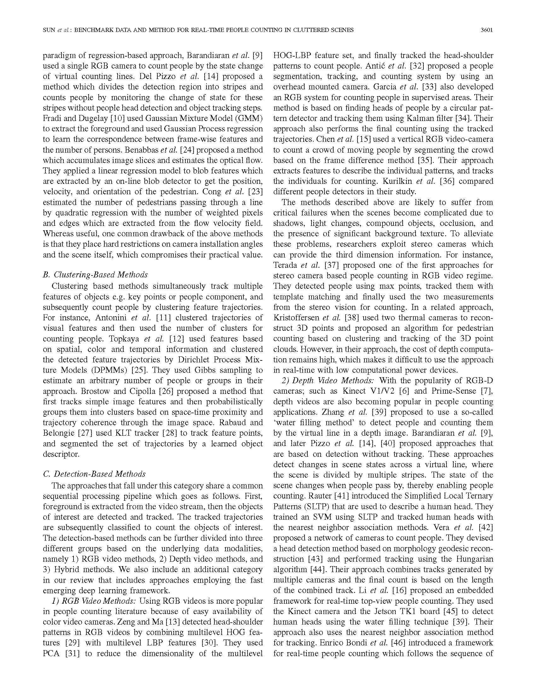
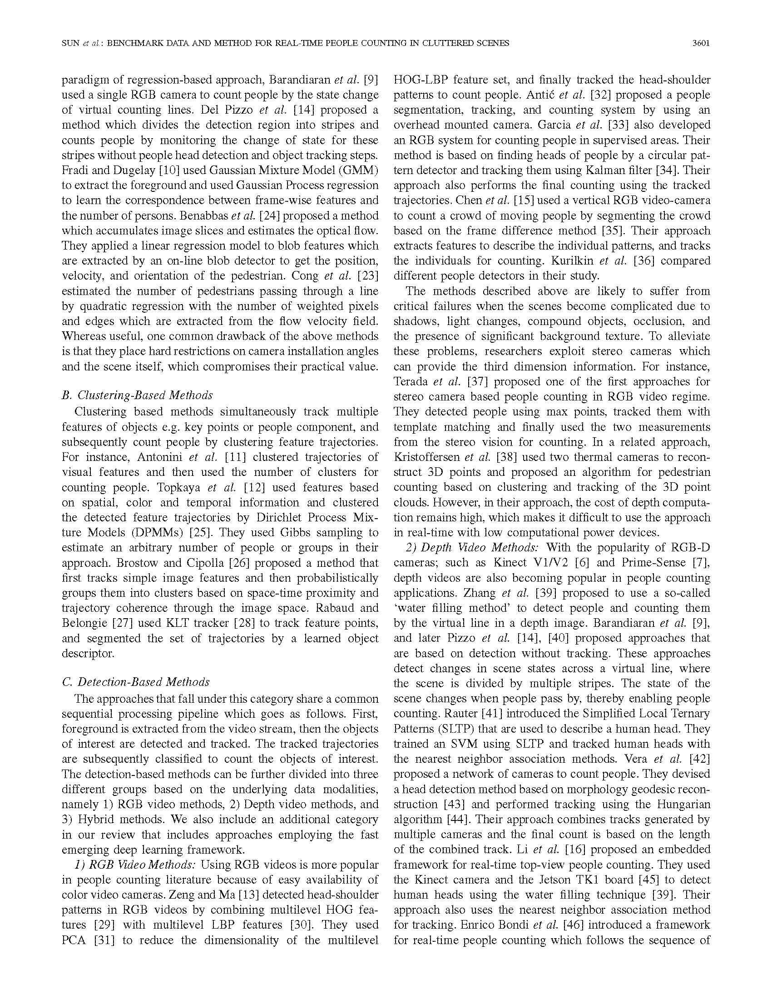
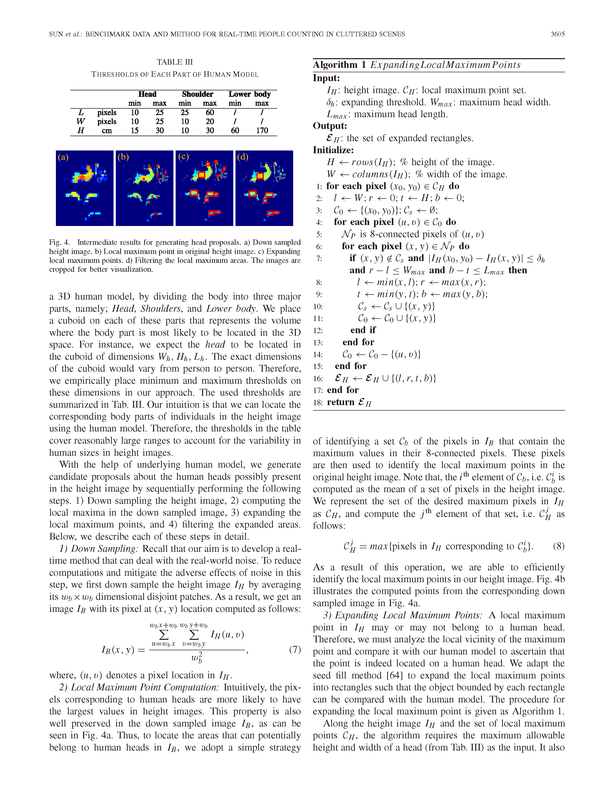
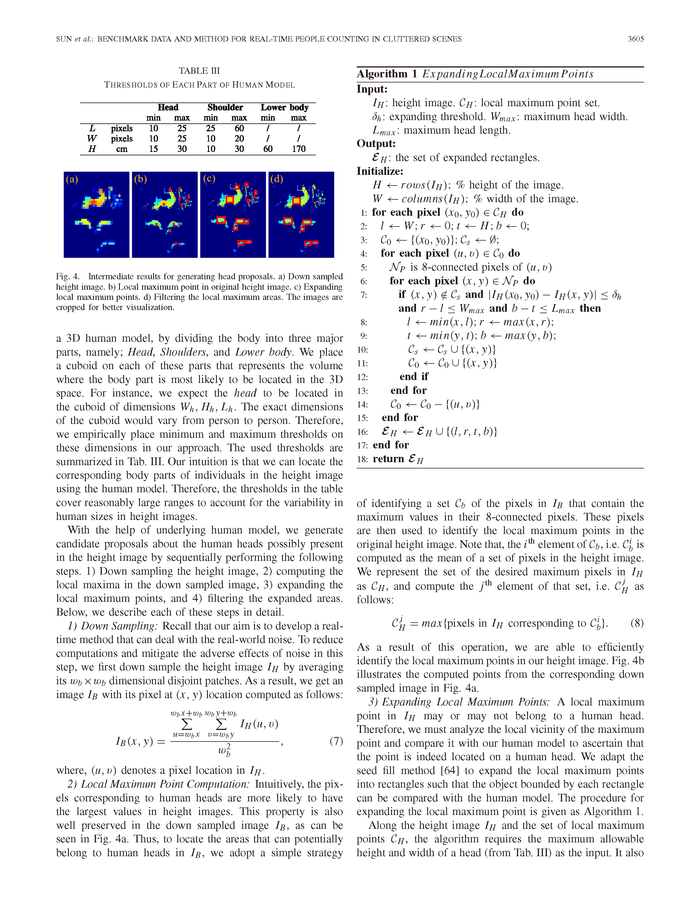
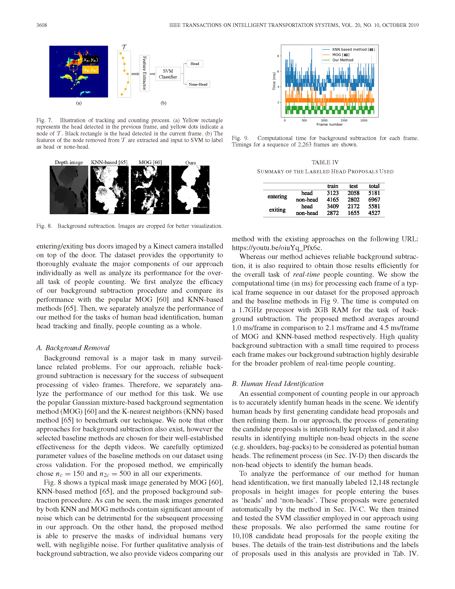
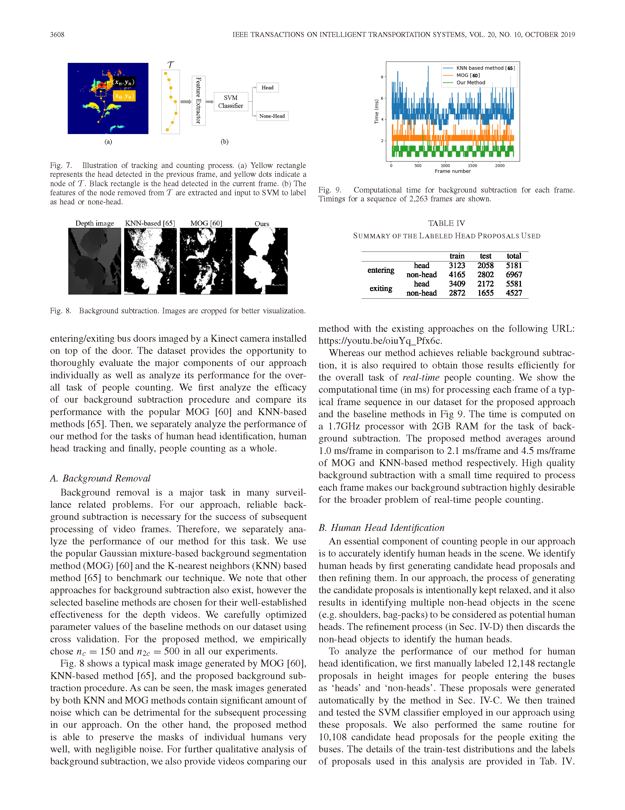
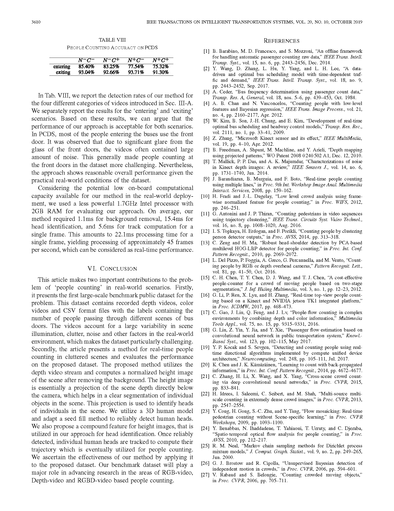
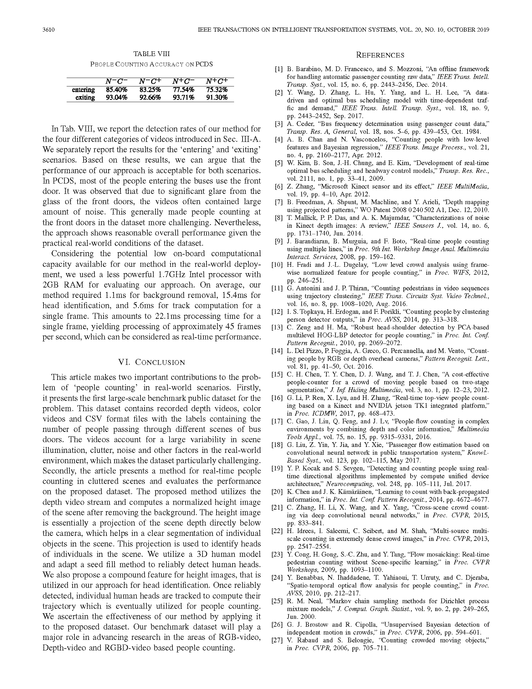
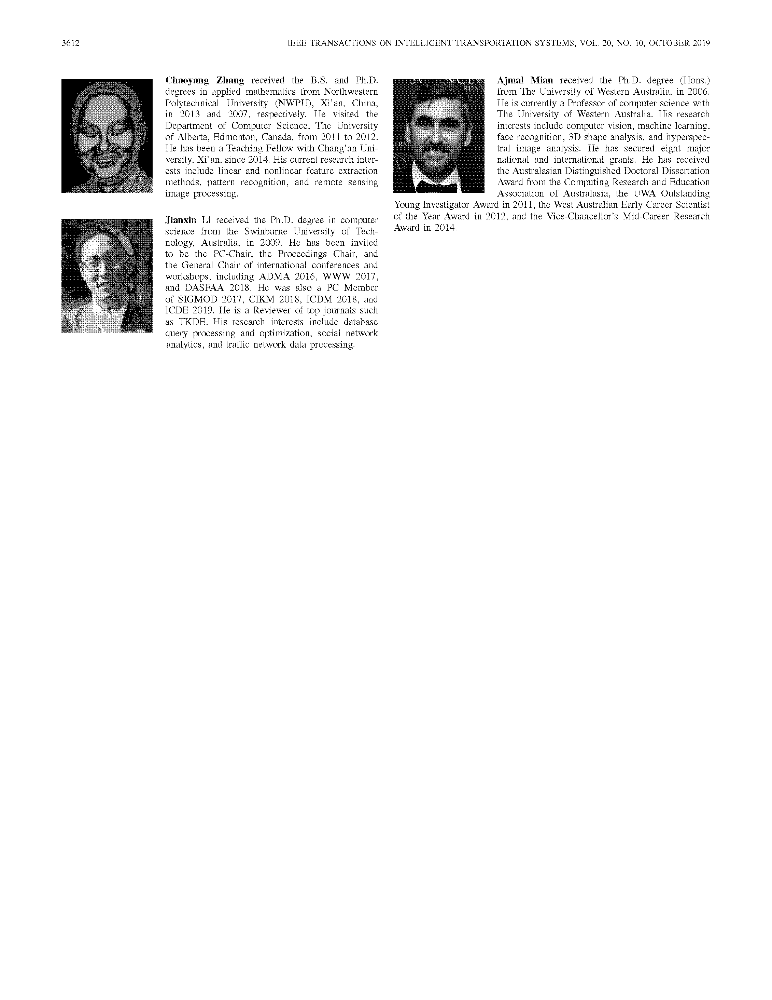
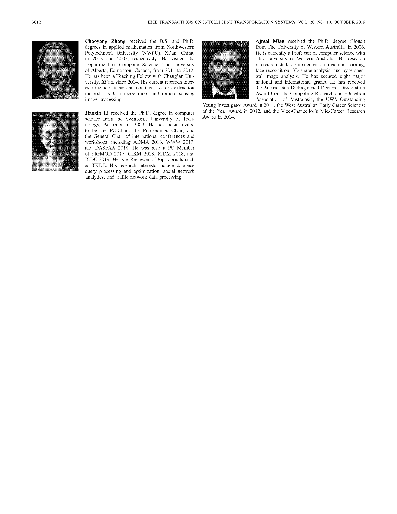

Color Video Demo
Depth Video Demo
Summary
Benchmark data and method for real-time people counting in cluttered scenes using depth sensors
ShiJie Sun, Naveed Aktar, HuanSheng Song, ChaoYang Zhang, JianXin Li, Ajmal Mian@article{sun2019benchmark,
title={Benchmark data and method for real-time people counting in cluttered scenes using depth sensors},
author={Sun, ShiJie and Akhtar, Naveed and Song, HuanSheng and Zhang, ChaoYang and Li, JianXin and Mian, Ajmal},
journal={IEEE Transactions on Intelligent Transportation Systems},
year={2019},
publisher={IEEE}
}
}


 



 

 

 

 
